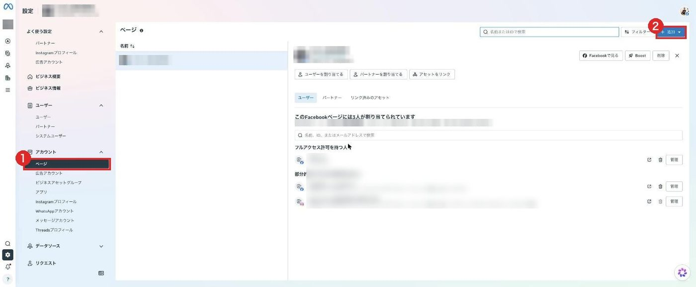
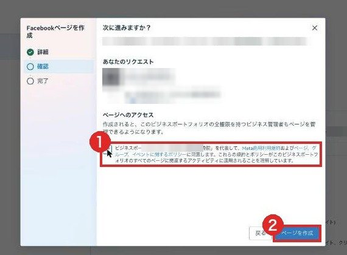
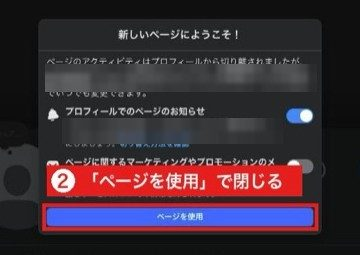
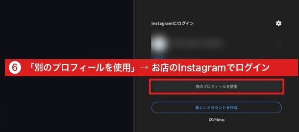
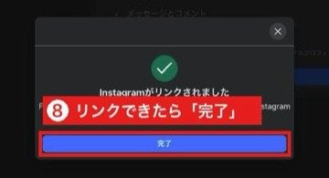
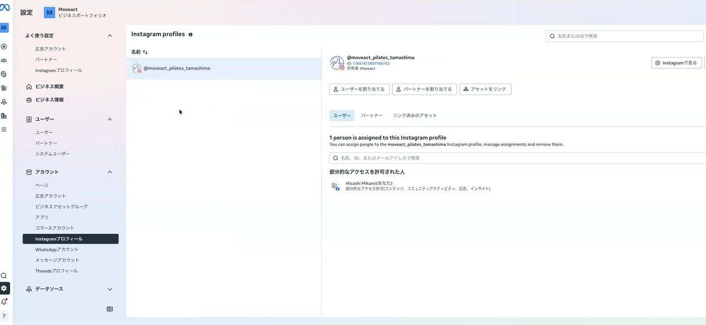
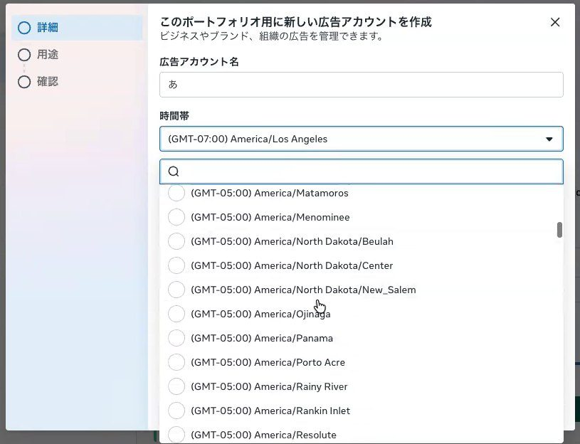
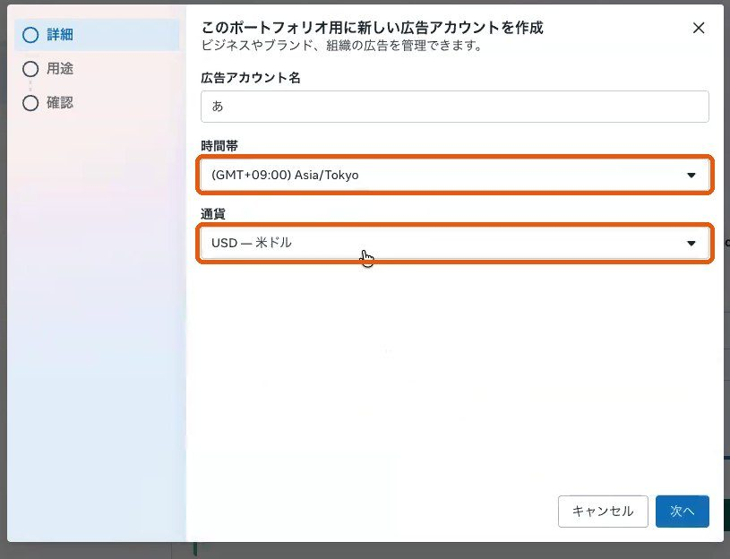
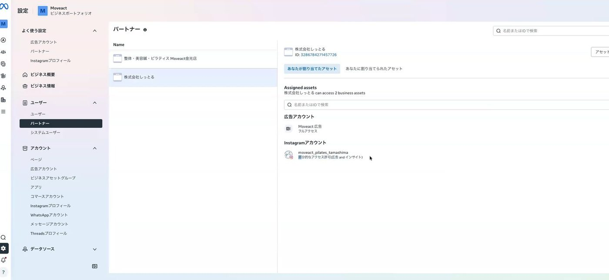

準備 4 実際の画面
Facebookページを作る（番号の順に押す）

① 設定の「ページ」 ② 右上の「＋追加」

①「新しいFacebookページを作成」を押す

① ページ名（お店の名前） ② カテゴリ（業種） ③「Next」

① 同意のチェック ②「ページを作成」
広告をはじめる準備 4 ／ 画面は実際のもの（他のお店の名前・金額はぼかしています）
準備 5
InstagramをFacebookページにつなぐ
Zoomで一緒に進められます
- Instagramアプリで「プロアカウント」にする（設定→アカウントの種類とツール。無料・投稿はそのまま）
- パソコンのFacebookで、お店のページを開いて「切り替える」
- 「設定とプライバシー」→「設定」→「Instagram」→「アカウントをリンク」
- Instagramのユーザーネームとパスワードはご本人が入れます
1つのページにつなげるInstagramは1つだけ。「アカウントセンター」の「アカウントを追加」や、ビジネス設定に追加しただけでは、ページにはつながりません

広告をはじめる準備 5 ／ 画面は実際のもの（他のお店の名前・金額はぼかしています）
準備 5 実際の画面
Instagramをつなぐ（番号の順に押す）

②「新しいページにようこそ」は「ページを使用」で閉じる

③ 設定 →「Instagram」→「アカウントをリンク」

④ 説明を読んで「リンクする」

⑥「別のプロフィールを使用」→ お店のInstagramでログイン

⑦ お店のビジネスポートフォリオに「追加」

⑧ リンクできたら「完了」
広告をはじめる準備 5 ／ 画面は実際のもの（他のお店の名前・金額はぼかしています）
準備 5 確かめ
つながったかを確かめる

Facebookの設定の「Instagram」に、お店のInstagramが出ていれば完了

ビジネス設定の「Instagramプロフィール」にも、お店のInstagramが出ます
スマホのInstagramアプリでも確かめられます。「プロフィールを編集」にお店のページの名前が出ていれば、つながっています。
広告をはじめる準備 5 ／ 画面は実際のもの（他のお店の名前・金額はぼかしています）
準備 6
広告アカウントを確かめる（無ければ作る）
Zoomで一緒に進められます
- 左のメニューの「広告アカウント」に、お店の広告アカウントがあるか見る
- 無いときは「＋追加」→「新しい広告アカウントを作成」
広告アカウント名：店舗名_地域_Meta広告
例：さくら整骨院_倉敷市_Meta広告
時間帯：Asia/Tokyo 通貨：JPY（日本円）
時間帯と通貨はあとから変えられません。新しいポートフォリオでは、広告アカウントは最初1つしか作れません

広告をはじめる準備 6 ／ 画面は実際のもの
準備 6 実際の画面
時間帯と通貨を選ぶ

時間帯は最初「ロサンゼルス」。欄を押して検索に「T」と打ち、Asia/Tokyo を選ぶ

通貨は最初「米ドル」。欄を押して「J」と打ち、JPY（日本円）を選ぶ

「次へ」→「自分のビジネス」→ 確認の画面でチェックを入れて「広告アカウントを作成」
「広告アカウントを作成」を押す前に、名前・時間帯・通貨をもう一度読み上げて確かめてください。
広告をはじめる準備 6 ／ 画面は実際のもの（見本では作成ボタンは押していません）
準備 8 確かめ
パートナーに「株式会社しっとる」が出れば完了

「もう少しで完了です」と出たら「アカウントを認証」を押し、案内どおりに進める

「パートナー」の一覧に株式会社しっとるが出て、押すと渡したものが並んでいれば完了
広告をはじめる準備 8 ／ 画面は実際のもの